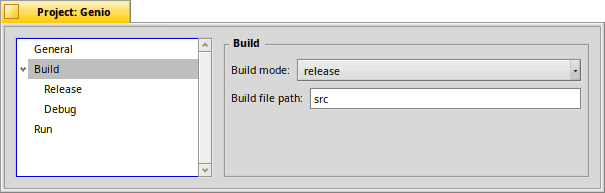
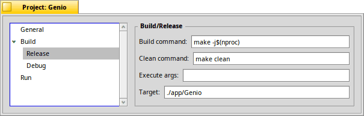
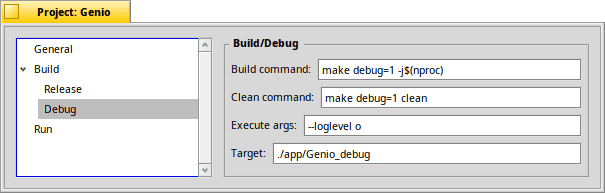

| Index |
|
General Build ┣━ Release ┗━ Debug Run |
The Project Settings
From the list on the left, you choose the different settings categories.
 General
General
You can assign a color to a project, which is used as background for the project's top folder in the Projects pane. It's also used for the colored dot in front of the filename in the tab bar of open files. This makes it easy to tell which of the opened files belong to what project.
Build

Here you chose to build either in or mode when invoking (ALT B) or via the toolbar icon.
There's also the menu to quickly switch between the two modes.
Build / Release

On this page you configure the commands to use in release mode. The specific commands depend of course on your build system. In this example we use Make with the makefile_engine that comes with Haiku.
| The command executed when building via (ALT B) or via the toolbar icon. -j$(nproc) is a flag to use all available CPU cores. You can add additional parameters, of course. | |
| The command executed to remove everything from a previous build via or via the toolbar icon. | |
| You can add arguments when running the built app via (SHIFT ALT R) or via the toolbar icon. | |
| This is the path to where the build system (in this case the Makefile) puts the executable after a everything was successfully built. |
If you haven't configured your build commands correctly, the corresponding icon in the toolbar will be inactive.
Build / Debug

The settings for the debug build are identical to the ones for a release build above.
In our Makefile build system example, debug=1 triggers a build with debugging symbols etc.
The --loglevel o is specific to our example app – Genio – which parses command line parameters, this one instructing to use a specific log level.
Run
If you enable Genio will simulate starting the built application in a Terminal environment, i.e. the appropriate environment variables are set etc.
Back: Genio Settings Next: Configuring clang's LSP